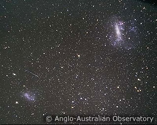

Credit: AAO
The Magellanic Clouds are comprised of two irregular galaxies, the Large Magellanic Cloud (LMC) and the Small Magellanic Cloud (SMC), which orbit the Milky Way once every 1,500 million years and each other once every 900 million years. Lying only about 200,000 light years away, they were the closest known galaxies to the Milky Way until recently, when the Sagittarius and Canis Major dwarf galaxies were discovered and found to be even closer.
Although very close to us, the Magellanic Clouds have played a significant role in our understanding of the distant Universe. Henrietta Leavitt discovered the period-luminosity relation for Cepheids while studying variable stars in the SMC. This has become one of the most important relations in determining distances to objects in the Universe, and forms the first rung of the extragalactic distance ladder. In addition, the metallicity of the Magellanic Clouds is much lower than that of the Milky Way. These lower metallicities align more closely with the conditions found in the early Universe (before the evolution and deaths of stars could enrich the interstellar medium) giving astronomers an idea of the processes that might have been in action billions of years ago.
Another important feature associated with the Magellanic Clouds is the Magellanic Stream. Extending half way around the Milky Way, this is a tidal tail of gas that has been stripped from the Small Magellanic Cloud by an interaction with either the Milky Way or the Large Magellanic Cloud (the actual culprit is still a topic of research).